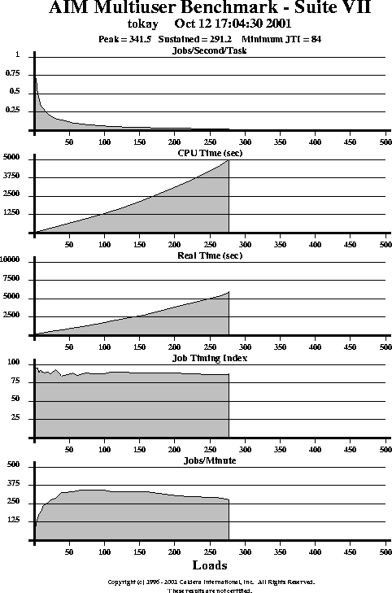

Copyright (c) 1996 - 2001 Caldera International, Inc. All Rights Reserved.
"AIM Benchmark" and "Hot Iron Awards" are trademarks of Caldera International, Inc. (Caldera) in the USA and other countries. Caldera allows use of "AIM" and "AIM Benchmarks" when presenting performance results, but places restrictions on this to promote comparability of results and avoid confusion. Results presented using the terms "AIM" and "AIM Benchmark" must be obtained with an official version of the benchmark, as designated by Caldera, using one of the standard distributed workload mixes. No right or license is granted hereunder to use the Caldera trademarks for modified benchmark versions or for other purposes without the prior written permission of Caldera.
"UNIX" is a trademark of the The Open Group.
The documentation, consisting of this user guide, is essentially the
original documentation developed by AIM Technology, lightly edited to remove
references to no longer relevant restrictions and services.
| CHAPTER 1 | 3 |
| INTRODUCTION: THE MULTIUSER ENVIRONMENT | 3 |
| THE BENCHMARK MIXES AND TESTS | 4 |
| HOW THE BENCHMARK WORKS: A SYNOPSIS | 6 |
| GLOSSARY | 7 |
| KEY TO SYMBOLS | 8 |
| CHAPTER 2 | 9 |
| GETTING STARTED: INSTALLATION AND SET UP (S7setup) | 9 |
| MINIMUM SYSTEM REQUIREMENTS | 9 |
| INSTALLING THE BENCHMARK | 10 |
| SELECTING THE APPROPRIATE MIX | 12 |
| RUNNING THE S7setup SCRIPT | 13 |
| MAKING THE BENCHMARK: make | 18 |
| THE config FILE: NAMING DISK DIRECTORIES | 19 |
| THE BENCHMARK'S WORKFILES | 20 |
| FILESIZE AND POOLSIZE PARAMETERS | 21 |
| CREATING A CUSTOM USER MIX | 23 |
| ADDING CUSTOM TESTS: C LANGUAGE AND SHELL SCRIPTS | 24 |
| CHAPTER 3 | 26 |
| STARTING THE BENCHMARK: | |
| RUNNING THE multitask PROGRAM | 26 |
| COMMAND LINE OPTION | 29 |
| STOPPING THE BENCHMARK | 31 |
| PREMATURE TERMINATION OF THE BENCHMARK | 32 |
| CHAPTER 4 | 35 |
| BENCHMARK RESULTS | 35 |
| THE BENCHMARK'S OUTPUT FILES | 35 |
| SPREADSHEET OUTPUT FILE: suite7.ss | 35 |
| DETAILED OUTPUT FILE: logfile.suite7 | 36 |
| GENERATING REPORTS: rpt | 36 |
| EVALUATING BENCHMARK RESULTS | 39 |
| APPENDIXES | 40 |
| THE BENCHMARK'S TESTS | 40 |
| CALCULATING THE MIX | 43 |
| AIM MULTIUSER BENCHMARK FILES | 45 |
| AIM MULTIUSER BENCHMARK MIXES | 47 |
| MULTIUSER/SHARED SYSTEM MIX: workfile.shared | 47 |
| COMPUTE SERVER MIX: workfile.compute | 49 |
| LARGE DATABASE MIX: workfile.dbase | 50 |
| FILE SERVER MIX: workfile.fserver | 51 |
The AIM Multiuser Benchmark - Suite VII tests and measures the
performance of Open System multiuser computers. Multiuser computer
environments typically have the following general characteristics in common:
Multiuser systems are commonly used to support the following types of user
environments:
Included in the distribution are four preconfigured standard mixtures of tests or "mixes" to represent the above mentioned multiuser system environments. If none of the standard mixes mirrors your environment, you can create a "custom user mix" that more closely models your application mix.
AIM Technology previously used the results from the multiuser benchmark Suite VII and the AIM Independent Resource Benchmark - Suite IX to generate Certified Multiuser Reports (CMR). These reports identified the performance results of the benchmarks, including System Throughput, Peak Performance, and Sustained Performance. The ability to generate benchmark reports remains, but the certification service is no longer available.
The following section introduces you to the benchmark's standard mixes.
The AIM Multiuser Benchmark - Suite VII includes 55 basic tests that are combined in preconfigured standard mixes to model common multiuser Open System environments.
The AIM Benchmarks employ a benchmarking technique called "Load/Mix Modeling." Load Mix/Modeling is very simple in concept. Each AIM Benchmark contains a wide range of subtests. Each subtest generates a specific type of "load," such as integer multiply or a specific type of file operation. Furthermore, there are facilities to add additional subtests (or actual applications) to work the system in any way deemed important for the users' evaluation. Taken together, these tests stress the entire range of system capabilities. To simulate a given application environment, a "load mix" is created which specifies exactly which subtests are to be used and in what proportions.
"Load/Mix modeling" is analogous to cooking. Given a fully stocked pantry (which corresponds to the selection of subtests) along with the ability to fill any additional needs (the ability to add subtests), and a recipe (the load mix), a skilled cook can prepare any dish.
The results are accurate system benchmarks that allow users to perform "apples to apples" comparisons over a broad range of dissimilar hardware platforms.
The preconfigured standard mixes for multiuser Open System environments are:
These standard mixes were developed by AIM as representative workloads for multiuser Open Systems in these environments. Each standard mix consists of multiple tests that exercise many basic functions of the multiuser system under test, including system resources such as CPU, library routines, storage subsystems (disk drives), and I/O subsystems, the latest optimizing compilers and operating system technologies, and all levels of memory, including caches and buffers. The tests are designed to minimize distorted results caused by some optimizing compilers which otherwise reduce simple tests to machine code not representative of the original test objective.
You can use the benchmark's standard mixes or create your own custom user
mix by
See CREATING A CUSTOM USER MIX on page 23 for more detail.
If a standard mix contains individual tests that do not apply to your environment, you can create a custom user mix that excludes those tests. This feature gives you the ability to simulate the applications that will be used on the test system. For example, if the system under test is primarily used for a database application, you would most likely increase the weight of the benchmark's disk tests and eliminate the floating point tests. Each of the benchmark's standard mixes is described later in this manual.
You can also create a custom user mix by adding custom C language tests and shell scripts. This feature allows you to identify additional tests that are critical to your operation and include those tests in the benchmark run. When this feature is used, the benchmark will report the results for the tests that you have added in the same manner as it reports the results for its native tests.
When systems are tested with the same mix, the benchmark results allow easy comparison of the systems, and make the computer selection process fast and efficient.
Before the benchmark is run, decide which standard mix applies to your environment, or create a custom user mix. When you have selected or created a mix, run the setup script, S7setup. Accept the script's defaults for variables (for example, compiler options), or enter new values. When you have responded to all of the script's queries, enter "make" to complete the benchmark setup (make creates a binary and a shell script).
Run the multitask program and answer prompts to start the benchmark.
The benchmark
The benchmark runs until it reaches the user-specified maximum number of operation loads or the system "crossover" (that is, when the number of operation loads meets or exceeds the number of jobs processed per minute).
To review the test results, examine suite7.ss; use rpt to generate reports. If desired, rerun S7setup and recompile the benchmark to use different compiler options or after reconfiguring the system under test.
benchmark - A program that tests how computer systems perform.
crossover - When the number of operation loads meets or exceeds the number of jobs processed per minute. Indicates the multitasking operation load where the system's performance could become unacceptable (that is, less than 1 job/minute/operation load).
job - One complete workfile. For Suite VI and VII, this is 100 tests. Composed of multiple tests. Same as task.
load - One complete job. At a load of 5, there are 5 concurrent jobs running on the system. Dealing with multitasking capability of machine.
Makefile - Contains instructions and rules to the compiler and linker regarding how to build the benchmark executable program from the source files.
mixes - Different combinations of tests for applications, system resources, and operation loads that assign weights or values to each test to simulate specific types of environments.
multitask program - Executable program for the AIM Multiuser Benchmark - Suite VII.
operation - One subset of a test. For example, in the add_int test, an operation would be one integer addition.
operation load - Load that a simulated application places on the test system.
PostScript - A page-description language which uses text to describe graphical images.
process - Any program that runs on a UNIX system is a process.
rpt - Executable program that generates a PostScript report from the benchmark results (suite7.ss).
S7setup script - Bourne shell script program that guides users through the steps required to gather the target Open System information needed to set up the test environment and build the benchmark.
shell script - File containing a sequence of UNIX commands to be executed when the name of the file is typed on the command line.
system resources - System resources include: ram, disk storage, I/O subsystems, and CPUs.
task - Same as job.
test - One functional analysis. An example would be add_int. Composed of multiple operations. Add_int may have 106 inter operations.
test environment - The functions, applications, and system resources that the benchmark exercises on a system to test performance.
| SYMBOL | DEFINITION |
| $ | system prompt |
| # | system prompt when logged on as root |
| <> | required parameters |
| [] | default value or range of legal values |
| boldface | script names or program names |
| italics | system prompts, file names, or directory names |
| boldface, courier | user input |
| root | root or superuser |
The following steps summarize the installation and set up procedure for the
benchmark:
This benchmark will compile and run on most POSIX-compliant UNIX systems. All source code is in ANSI C. To assure its portability, the program uses standard system calls.
Make sure your swap file is large enough. A small swap file will severely affect your system performance, particularly when the system is saturated by work load. Most factory default recommendations are too small for a successful benchmark run. It is recommended your swap file size be at least double your physical memory size.
Semaphores are critical kernel resources needed in our benchmark's IPC tests. Depending on the system configuration, you should increase the semaphore parameters accordingly. The most optimal semaphore parameters for the benchmarks are dependent on the operating system, configuration, and benchmark mix, and can best be determined by trial and error.
It is recommended that you run the benchmark with a X-window or shell tool and leave the console untouched. The window processes will take up some system resources, but the performance impact is minimal and the window will be extremely helpful if you need to stop the benchmark before it finishes.
Each test system must meet the following minimum requirements:
With this distribution, Caldera is making available, under the GPL, formerly proprietary technology developed by AIM Technology, Inc. Please refer to the beginning of this document for additional restrictions applying when presenting results.
Starting with the open source release of this benchmark, AIM Suite VII is
provided only as a compressed tar archive. To unpack it
$ zcat s7110.tar.Z | tar xf -
$ cd s7110
On GNU based systems, use gzip -cd instead of zcat
The benchmark includes four standard mixes that model four multiuser
environments. Each standard mix is a workfile that contains a list of tests and
the weight attached to each test (that is, the importance or value of the
test). A test with a higher weight (for example, 1000) will run more frequently
than a test with a lower weight (for example, 50). See the CALCULATING THE MIX
appendix on page 43 for more information about this
feature.
| Type | Functions | Tests |
|---|---|---|
| Primary Mix | Multiuser/Shared System | Small memory/user (assume lots of concurrent users), heavy tasking, medium integer, light fp, medium file I/O, light sync file I/O, light/medium IPC, lots of shell routines, string routines, misc routines |
| Secondary Mixes | Compute Server | Small number of large compute tasks with I/O, heavy memory, heavy fp, heavy integer, heavy file I/O, medium IPC, algorithmic tests |
| Large Database | Small number heavy I/O jobs, light memory, light integer, heavy file I/O, heavy sync file I/O, string routines | |
| File Server | Enough tasks to saturate system, heavy sync I/O, heavy async I/O, heavy IPC, nothing else |
Each standard mix is described in detail in the AIM MULTIUSER BENCHMARK MIXES appendix on page 47.
When you run the S7setup script, the script will ask you which mix you want to use. If none of the standard mixes match your test environment, you can create your own custom user mix by copying a standard mix and deleting existing tests and/or adding custom tests (C language or shell scripts). See the following sections for instructions: THE BENCHMARK'S WORKFILES on page 20, RUNNING THE S7setup SCRIPT on page 13, and ADDING CUSTOM TESTS: C LANGUAGE AND SHELL SCRIPTS on page 24.
The S7setup script used to set up the benchmark requires the
following information:
| Variable | Description |
|---|---|
| Mix | Select a preconfigured mix or enter the name of the file that contains your custom user mix. |
| Compiler | Name of compiler executable. You must set $PATH to find this executable and all associated files. |
| Compiler options | Enter the compiler options used to optimize code generation. Additionally, because the benchmark is written using ANSI and POSIX compliant code, you must invoke the appropriate compiler options (for example, -ansi -xpg3plus) for a given compiler. |
| Linker options | The benchmark must link the networking libraries for the interprocess communication tests. On some machines the user must specify -lsocket and possibly -lnsl. If a platform requires links to special libraries (for example, -lmalloc) or more specific linking options, use this option to name the libraries. |
| Bourne shell | Identify location of Bourne shell executable (usually /bin/sh). |
| Mount point for each configured disk drive | If the system is configured with more than one disk drive, you can set up the benchmark to use multiple drives. The benchmark will create temporary files on each drive that you identify. For more information see THE config FILE: NAMING DISK DIRECTORIES section on page 19. |
To start the script, run S7setup as root. Enter
S7setup at the system prompt and press RETURN:
# S7setup
The following is a transcript of a S7setup run:
AIM Multiuser Benchmark - Suite VII S7setup
Copyright (c) 1996 - 2001 Caldera International, Inc.
All Rights Reserved.
------------
INTRODUCTION
------------
This script guides you through the steps needed to tailor the AIM Multiuser
Benchmark - Suite IV to your environment. It will ask you a series of questions
to identify the components of the System Under Test (SUT). As each question is
displayed on the screen, you can accept the default value that is enclosed
in brackets (e.g. [default_value] ), or enter the correct value. At any
point during the execution of this script, you may type Q to terminate it.
CAUTION: This script will NOT automatically set up the correct environment
to run the benchmark. It is important that you provide the correct
information for the computer and operating system that are being benchmarked.
Verify and edit the Makefile as required before running the benchmark.
Press RETURN to continue, press Q to exit ...
You will be asked to provide the following information about the system
to be tested:
1) Benchmark mix
2) Your compiler name
3) The compiler options to be used
4) The linker options to be used
5) The location of the Bourne shell executable
6) The mount point for each configured disk drive,
if the SUT is configured with more than one drive
If you do not know or are unsure about any of the items mentioned above,
press Q to terminate this installation script. Check with your System
Administrator or consult the SUT manuals for the correct information.
Press RETURN to continue, press Q to exit ...
-------------
BENCHMARK MIX
-------------
Which mix do you wish to run?
1) Multiuser/Shared System
2) Compute Server
3) Large Database
4) File Server
5) Custom User Mix
If you do not know, type Q to exit and find the correct answer.
Enter benchmark mix (1, 2, 3, 4, 5 or Q) [] :1
----------
COMPILER
----------
Enter the name of the C compiler you wish to use for this run.
Please use BOTH upper and lower case, exactly as required by your
compiler.
Enter compiler name [cc] :gcc
----------------
COMPILER OPTIONS
----------------
Enter any compiler options that you want to use for gcc. Some examples
of valid entries are listed below:
"-O" to optimize code produced by "pcc" based compilers
"-OP" to do peephole optimization with the Pyramid OSx compiler
"-O -f68881" for optimization and floating point for Sun-3's
Please note that this benchmark is written in Ansi C and is POSIX
compliant. Some compilers have special flags for these options.
Please use BOTH upper and lower case, exactly as required by your
compiler.
You may type Q to exit and look up the correct answer.
Enter compiler options [-O] :-O -m486 -ffloat-store
-------------- LINKER OPTIONS -------------- Are there any linker options that you should identify for the benchmark? For information on the linker, refer to the Programmer's Reference Manual for your system. You might identify a non-standard location of a library or system specific libraries that are needed to build the benchmark. For example, enter "-Wl,L/usr/local/lib" to search for libraries in a "/usr/local/lib" directory. Note that the benchmark requires that networking routines such as 'socket()' be available. On some machines, an additional library such as -lsocket will need to be specified. Check with your System Administrator or consult your System manuals. Again, use BOTH upper and lower case, exactly as required by your compiler. You may type Q to exit and look up the correct answer. Enter linker options [] : ------------ BOURNE SHELL ------------ You must specify the location of the Bourne shell executable on your system. 'sh' is usually found in /bin. However, this may vary from system to system. Check with your System Administrator or consult your System manuals. Enter the path to 'sh' [/bin] : ---- DISK ---- A multiuser system is greatly affected by the performance of its I/O subsystems. Your disk subsystem has a big impact on the benchmark results. Generally, the more drives and controllers you have, the better your I/O throughput will be. If you have configured your system with multiple disk drives and would like the benchmark to use them to exercise your system, you must list them in the "config" file.
For each installed drive that you would like the benchmark to use, enter a line
giving its mount point like the following example:
/disk1
Currently the benchmark can directly exercise up to 256 drives. If you are
ready, you may edit the "config" file now. The "config" file can be updated
anytime prior to starting the benchmark.
Currently, the config file contains:
------------------------------------
#Disk directories to exercise:
------------------------------------
Do you want to edit the "config" file now (y/n) ? [y] : n
Creating "Makefile" ...
completed.
The file "Makefile" has been created.
Enter "make" to build AIM Multiuser Benchmark - Suite VII.
Type "multitask" to run AIM Multiuser Benchmark - Suite VII.
If there are any problems, you can either run this configuration script
again or edit the "Makefile" directly.
Once S7setup is run, a Makefile exists and the software is ready for
compilation. To compile the software and generate the multitask
executable, type the following:
$ make
Once the make completes successfully, you are ready to run the
benchmark.
| NOTES: | If you have trouble compiling, make sure you are specifying any
options your compiler may need for POSIX code (for example,
-xpg3plus with the SCO compiler).
If the compilation of the benchmark is failing because your system does not have the ulimit() routine and cannot find ulimit.h, supply -DNO_ULIMIT as a compile option during S7setup. If the compilation of the benchmark is failing because your system does not have the socketpair() routine, supply -DNO_SOCKETPAIR as a compile option during S7setup. |
The benchmark exercises a disk by reading from and writing to temporary
files that it creates on that disk. The config file stores the names of
the disk directories. S7setup asks you if you want to edit this file.
The format of the file consists of any number of lines, each containing the
name of a single directory to be used by the benchmark. Let's look at an
example:
#Disk directories to exercise:
/diskl
/disk2
These entries tell the benchmark to create its temporary files in /disk1 and /disk2 during the disk tests. If you want to generate temp files in the current directory, enter ./ in the config file. If S7setup runs to completion and you decide that you want to change the contents of the config file, use a text editor to update the config file before you start the benchmark.
NOTE: A blank line added to the Suite VII config file can cause the benchmark to write its temp files to the root directory, /. If the intention is to have the benchmark use the default directory, make sure there are no blank lines or other characters after the comment line.
| Standard Mix | Mix Workfile |
|---|---|
| Multiuser/Shared System Mix | workfile.shared |
| Compute Server Mix | workfile.compute |
| Large Database Mix | workfile.dbase |
| File Server Mix | workfile.fserver |
S7setup uses the contents of the mix workfile that you select, for example, workfile.compute, to create the workfile that the multitask program uses when it runs the benchmark.
The benchmark creates temporary files for its disk tests. Each mix uses temporary files of a specific size to model a specific computing environment. The size of these temporary files is controlled by the FILESIZE and POOLSIZE parameters in the mix workfile, for example, workfile.shared. The temporary files are created in the directories named in the config file.
To change the FILESIZE or POOLSIZE parameters, edit the entries in the
mix Workfile (if you are using a custom user mix, edit the appropriate file).
The format for these entries is as follows:
FILESIZE: <temporary file size>
POOLSIZE: <temporary disk pool size>
There must be a space between the FILESIZE: and POOLSIZE: keywords
and the size value. You must specify an integer value in kbytes or megabytes
(k or K and m or M), for example:
FILESIZE: 5K
POOLSIZE: 100M
FILESIZE + (POOLSIZE/current load level) = size of temporary file
Let's look at an example:
FILESIZE: 1K
POOLSIZE: 5M
At 1 application load, the benchmark would calculate the temporary files as follows:
1K + (5M/1 process) = 1K + 5M = 5121K
At 5 application loads, the benchmark would calculate the temporary files as follows:
1 K + (5M/5 processes) = 1K + 1M = 1025K
If you change these parameters in one of the workfile.xxx files, rerun S7setup or make the same changes to the file named workfile in the benchmark directory.
If a standard mix includes tests that do not apply to your environment, use
the following steps to create a custom user mix:
When you run the S7setup script, identify the new custom user mix workfile (see the RUNNING THE S7setup SCRIPT section on page 13).
If you change a custom user mix after running S7setup, rerun S7setup or make the same changes to the file named workfile that you made to the custom user mix workfile.
You can add a custom test by supplying C code or by modifying the aim_1.sh, aim_2.sh or aim_3.sh shell scripts.
To modify a shell test, modify the aim_1.sh, aim_2.sh or aim_3.sh shell scripts. Create a custom user mix to run these tests by copying the existing standard mix workfile to a new file (for example, cp workfile.gis workfile.gis.custom) and adding shell_rtns_1, shell_rtns_2, or shell_rtns_3 to the new custom user mix along with the desired weight.
To add a C code test, follow the steps below:
void register_test(char *name, /* name of the test */
char *args, /* pointer to the args string */
int (*f)(), /* pointer to the test */
int factor, /* # of operations in test */
char *units) /* units for the factor */
For example:
register_test("ram_copy","64", ram_copy, 25020, "Memory to Memory Copy");
register_test("add_short","3 -3 2000000", add_short, 2000000, "Short Integer Additions");
Add code and tests to files.h.
The multitask program used to run the benchmark requires the
following information:
| Variable | Description |
|---|---|
| Machine name | Identify name for run |
| Machine configuration | Additional identifying information (optional). |
| Number of iterations to run | Number of times to run the benchmark for example, 9. Legal values are 1 - 10. |
| Starting number of operation loads | First operation load to simulate, usually one. Default: 1. Range: 1 - 100000. |
| 1) Run to crossover or 2) Run to specific operation load | Controls termination: (1) automatically (at crossover) or (2) manually (at specific operation load). Enter 1 or 2. Crossover occurs when the number of operation loads meets or exceeds the number of jobs processed per minute. When crossover occurs, the benchmark has completed a successful run. |
| Maximum number of operation loads to simulate | Final operation load to simulate (applicable only if option 2 is selected above). No maximum. |
| Variable | Description |
|---|---|
| Operation load increment | Incremental number of operation loads for each run. For example, if you enter 2, the first run will include two operation loads, the second run will include four operation loads, and so on. The benchmark uses this value until the adaptive timer is activated. The adaptive timer, activated after the first 8 datapoints or when the operation load exceeds 20 (whichever occurs first), bases the selection of the next operation load on the recent rate of change of system throughput. This process reduces the benchmark's run time. Range is 1 to 100. |
The benchmark forks off one process for each simulated operation load. For example, when the benchmark is simulating 10 operation loads, it forks off 10 processes. Each of these processes can run up to 100 tests. The mix or combination of tests that each process executes is controlled by the entries in the mix. See CALCULATING THE MIX on page 43 for more information.
To start the benchmark, run multitask as root. Enter
multitask at the system prompt and press RETURN:
# multitask
The following is a transcript of a multitask run:
You have chosen to use the adaptive timer.
You need to provide the initial increment for the operation load
so that the adaptive timer logic has a starting point to base
its calculations.
Use "multitask -t" to run without the adaptive timer.
AIM Multiuser Benchmark - Suite VII v1.1, January 22, 1996
Copyright (c) 1996 - 2001 Caldera International, Inc.
All Rights Reserved.
Machine's name : tokay
Machine's configuration : 2.2.19
Number of iterations to run [1 to 10] : 1
Information for iteration #1
Starting number of operation loads [1 to 10000] : 1
1) Run to crossover
2) Run to specific operation load Enter [1 or 2]: 1
Operation load increment [1 to 100] : 2
HZ is <100>
AIM Multiuser Benchmark - Suite VII Run Beginning
Tasks jobs/min jti jobs/min/task real cpu
1 44.34 100 44.3395 131.26 22.83 Fri Oct 26 18:18:48 2001
3 121.77 94 40.5886 143.39 58.17 Fri Oct 26 18:21:13 2001
5 141.71 91 28.3419 205.35 93.97 Fri Oct 26 18:24:38 2001
7 174.75 90 24.9646 233.13 130.15 Fri Oct 26 18:28:32 2001
9 176.07 90 19.5630 297.50 166.35 Fri Oct 26 18:33:30 2001
11 195.40 88 17.7634 327.64 202.46 Fri Oct 26 18:38:58 2001
13 219.33 88 16.8715 344.96 239.23 Fri Oct 26 18:44:44 2001
15 216.98 92 14.4654 402.34 275.09 Fri Oct 26 18:51:26 2001
19 223.89 92 11.7838 493.90 347.14 Fri Oct 26 18:59:41 2001
23 237.71 86 10.3351 563.13 419.85 Fri Oct 26 19:09:04 2001
31 272.25 84 8.7823 662.70 565.92 Fri Oct 26 19:20:08 2001
48 280.81 80 5.8503 994.82 875.31 Fri Oct 26 19:36:43 2001
54 286.45 83 5.3046 1097.17 985.05 Fri Oct 26 19:55:01 2001
66 284.01 85 4.3031 1352.50 1204.49 Fri Oct 26 20:17:34 2001
78 284.19 84 3.6435 1597.36 1423.28 Fri Oct 26 20:44:11 2001
104 289.34 85 2.7822 2091.90 1915.76 Fri Oct 26 21:19:04 2001
115 286.15 86 2.4883 2338.98 2130.22 Fri Oct 26 21:58:03 2001
138 289.23 87 2.0959 2776.85 2605.84 Fri Oct 26 22:44:21 2001
188 279.61 86 1.4873 3913.10 3790.40 Fri Oct 26 23:49:34 2001
208 269.32 84 1.2948 4494.91 4263.59 Sat Oct 27 01:04:30 2001
250 257.06 84 1.0282 5660.25 5384.17 Sat Oct 27 02:38:51 2001
253 259.03 82 1.0238 5684.62 5458.18 Sat Oct 27 04:13:36 2001
256 255.58 82 0.9984 5829.49 5561.15 Sat Oct 27 05:50:46 2001
Crossover achieved.
AIM Multiuser Benchmark - Suite VII
Testing over
When you run the benchmark you can specify the following command line
options.
| Option | Description |
|---|---|
| -dn | Turn on debug level n. The higher the number, the more debug output. |
| -f |
Alternate method for the selection of benchmark datapoints. Invoke
multitask with the -f flag and the benchmark will prompt the user
for the name of a file containing the numbers to be used as load values for
the duration of the run. A sample file would look like this:
unix_prompt> cat my_datapoints 1 5 9 15 21 50 75 In this example, the benchmark will run up through 75 loads or until it reaches crossover, whichever comes first. |
| -nl | Do not print out a logfile. [(n)o (1)ogfile] For use with systems short on disk space in the benchmark home directory. |
| -t | Alternate method for the selection of benchmark datapoints. Invoke multitask with the -t flag and the benchmark will increment the load by the value supplied by the user at the "Operation load increment" prompt. This option disables the adaptive timer. |
| Option | Description |
|---|---|
| -N | Alternate method for the selection of benchmark datapoints. Invoke
multitask with the -N flag and the benchmark will act exactly
as if no flags had been specified (that is, use the increment and then the
adaptive timer) until it gets close to crossover. When the current load is
within 10% of the Jobs/Minute value, subsequent load points are selected
using Newton's Method. A new increment is calculated by dividing the
difference between the current load and Jobs/Minute in half.
For example, if the current load is 100 and the Jobs/Minute is 108, the new increment would be (108 - 100)/2 = 4, making the next load point 100+4= 104. In this manner the benchmark more closely converges upon the cross over point without overshooting it by the large amount characteristic of the adaptive timer. On the average, this method requires the benchmark to run one more datapoint than using the adaptive timer alone, but for overnight runs this extra hour or two is insignificant. It may in fact actually save time on machines where a large jump at the end causes the machine to thrash and failure of the benchmark to complete. It has been observed that bringing the final datapoint in as close to the crossover point as possible has an affect on the performance rating for some platforms. Changing the slope of the line between the final 2 datapoints changes the interpolated crossover value. For machines that drop off sharply at the crossover point, the performance rating will increase if the last datapoint occurs as close to crossover as possible. Using -N option will help to insure this. |
Invoke multitask without flags (-t, -N, or -f) and the benchmark will use the increment specified at the "Operation load increment" prompt for a while and then switch over to the adaptive timer. The adaptive timer kicks in either after the first 8 load points or when the load exceeds 20, whichever comes first. From this point on, the selection of the next load point depends upon the recent rate of change of system throughput.
The benchmark includes a shell script, slay which searches for and
kills all benchmark processes. NOTE: It can take up to 10 minutes to
kill all of the benchmark's processes. To use this script, su to
root, position yourself in the benchmark directory, and enter one of
the following commands at the system prompt:
| Type of System | Command |
|---|---|
| System V | # slay.sysv -n multitask |
| All other systems | # slay -n multitask |
When slay has killed all of the benchmark's processes, remove all of
the benchmark's temporary files. Enter the following command in the benchmark
directory and in each of the directories that you specified at the disk prompt
in S7setup (data is stored in config file):
# rm tmp*
As an alternative to slay, you can also use the DELETE key, CONTROL-C, or CONTROL-\ to stop the benchmark (note that some systems rename these keys). When you use these commands to stop the benchmark, you must stop all of the benchmark processes (see table that follows) and remove all of the benchmark's temporary files (see rm command noted above). In addition, if you use, CONTROL-\ you must remove the core file that this command creates.
All benchmark processes include the string "multitask". Use the following
commands to identify and kill the benchmark processes:
| Type of System | Command |
|---|---|
| System V | # ps -ef | grep multitask # kill -9 <process ID> <process ID> |
| All other systems | # ps -ax | grep multitask # kill -9 <process ID> <process ID> |
If these commands are not appropriate for your system, consult your system
manual.
To remove the benchmark's temporary files, enter the following command in
the directories that you specified in the config file:
# rm -fr tmpa* tmpb* link* fakeh
Occasionally the benchmark terminates prematurely because of a resource shortage, for example, there are not enough process slots, there is not enough disk space or swap space, or there are kernel or file size limitations.
Not enough. process slots - The benchmark cannot fork any more test processes. Estimate the total number of processes needed as follows:
Total Processes = benchmark overhead + loads + system overhead
Benchmark overhead takes two processes. Each simulated load needs two
processes. To identify your system overhead, use one of the following
commands:
| Type of System | Command |
|---|---|
| System V | # ps -e | wc -l |
| BSD | # ps -a | wc -l |
No more disk space - The benchmark cannot open/create a file for reading or writing. Add more disk storage. The FILESIZE and POOLSIZE parameters in the mix workfile control the amount of disk space required by each simulated operation load.
Use the following quick rule of thumb to calculate the amount of disk space required by the benchmark for each directory in the config file:
<FILESIZE value> * MAX_LOAD + <POOLSIZE value> = required disk space
Where MAX_LOAD is the maximum load level expected to be attained during the benchmark run. This is an upper limit value for disk space.
The total amount of disk space required at any given time will depend upon
how many of the benchmark processes are running disk tests at that time. For
example, if FILESIZE was set to 1MB and POOLSIZE was set to 10MB
and the current load level was 5, then the temporary file size would be
calculated as follows:
| <FILESIZE value> | + | portion of <POOLSIZE value> | = | required disk space
|
| 1MB | + | 10MB / 5 | = | 3MB |
A 3MB static temporary file would be created in each directory specified in the config file. Additionally, up to 5 dynamic 3MB temporary files would be created, depending on how many of the 5 load processes were doing disk tests at any given time. The location of each of these dynamic temporary files is random and could be in any of the directories listed in the config file. A dynamic temporary file is removed as soon as a disk test is done. The static temporary file remains in existence for the duration of the benchmark run.
This means, then, that the upper limit on disk space required by the benchmark for each directory in the config file is:
TEMPSIZE + MAX_LOAD * TEMPSIZE
Where MAX_LOAD is the maximum load level expected to be attained during the benchmark run and TEMPSIZE is the temporary file size at the maximum load level. For example, if a machine is expected to run to 100 loads and FILESIZE is 1MB and POOLSIZE is 500MB, TEMPSIZE is calculated in the following manner:
TEMPSIZE = 1MB + 500MB / 100 = 6MB
The upper limit on disk space for each directory in the config
file is as follows:
| TEMPSIZE | + | MAX_LOAD | * | TEMPSIZE | = | Recommended
disk space
|
| 6MB | + | 100 | * | 6MB | = | 606MB |
If some benchmark processes are running non-disk tests while others are running disk tests, as is likely, then the system will not require all this space.
The fakeh directory placed in each config file directory only requires 100k of disk space and can usually be ignored in these calculations.
If you plan to rerun S7setup, change these values in the mix workfile. If you are not going to rerun S7setup, change these values in both the mix workfile and workfile.
No more swap space - The benchmark cannot allocate the memory needed to complete testing. Use swap or swapon. It is recommended that your swap space be at least 2 times your physical memory size.
Kernel limitations - The benchmark may terminate if
If this happens, you may need to reconfigure the kernel. Check with your System Administrator or consult your system manuals.
File size limitation - UNIX limits the size of any file that a
user creates. To find out the maximum file size, enter the following command
inside the Bourne shell:
% ulimit
A system may be unable to create the benchmark's temporary file,
tmpa.common, if the FILESIZE and POOLSIZE values for the
mix are too large. If this problem occurs, calculate your temporary file size
(the FILESIZE plus the POOLSIZE values) and use the ulimit
command to increase the maximum file size:
% ulimit <new value>
The new value is usually specified in units of 512-byte blocks.
The multitask program generates a tab delimited spreadsheet output
file, suite7.ss, that contains the benchmark results. The contents
include the name of the benchmark, version, machine name, the date of the run,
and a tab separated line for the results of each simulated operation load. Each
entry in the file records the current operation load (Loads), jobs per minute
(Jobs/Min), job timing index (JTI), elapsed wall clock time (Real), elapsed
CPU time (CPU), and jobs per second per load (Job/sec/load). To preserve
multiple copies of suite7.ss rename the file each time you run the
benchmark. If you do not rename the file, new results are appended to the end
of the existing file.
----------------------------------------------------------------------- Benchmark Version Machine Run Date AIM Multiuser Benchmark - Suite VII "1.1" tokay Oct 12 17:04:30 2001 Tasks Jobs/Min JTI Real CPU Jobs/sec/task 1 46.2 100 125.8 17.5 0.7708 3 122.5 94 142.5 42.3 0.6806 5 151.8 95 191.7 67.6 0.5060 7 179.2 89 227.4 93.1 0.4266 9 191.6 92 273.4 118.9 0.3549 11 207.0 90 309.2 144.2 0.3137 13 236.1 90 320.4 170.1 0.3028 15 241.4 88 361.6 195.6 0.2682 19 254.5 90 434.4 247.2 0.2233 23 273.4 87 489.7 298.4 0.1981 31 286.8 93 629.0 401.9 0.1542 39 325.3 84 697.8 505.7 0.1390 55 329.2 88 972.2 711.7 0.0998 61 338.0 85 1050.3 789.8 0.0924 73 341.5 88 1244.1 944.9 0.0780 99 341.4 87 1687.8 1292.9 0.0575 110 331.5 90 1931.2 1454.5 0.0502 133 330.2 89 2344.2 1822.3 0.0414 156 333.2 88 2724.5 2228.2 0.0356 205 301.6 88 3955.7 3195.4 0.0245 224 297.7 87 4379.4 3598.7 0.0221 264 288.5 86 5326.3 4561.4 0.0182 276 277.3 86 5793.1 4964.4 0.0167 277 273.4 87 5895.8 4963.6 0.0165 -----------------------------------------------------------------------
multitask also generates a file called logfile.suite7. This file contains benchmark results as well, but in a different format, and with some additional information. The timing value for each test run is recorded line by line. Each line lists the current load level, test name, elapsed time in milliseconds, user time, and system time.
The benchmark's report generation program, rpt, uses the data in
suite7.ss to produce a PostScript graphical output file. The output file
contains graphs for the following parameters:
All values are plotted against simulated operation loads. To create a PostScript output file, enter the following command at the system prompt:
$ rpt suite7.ss <name of output file>
(If you have renamed suite7.ss, enter the new file name in the previous command, for example, rpt run8 run8.ps). This command creates a PostScript file in the current directory that can be printed via any standard PostScript printer.
The peak jobs/minute, minimum JTI, crossover point, and sustained values are printed to the screen when rpt is run.
The peak performance is the highest jobs/minute the system achieved.
The sustained performance is the square root of the total area under your performance curve up to the point of crossover. The point of crossover is that point at which the Jobs per Minute/User Load = 1.0. This point is derived through interpolation of the last two data points.
The JTI rating is the worst case JTI, with the exception of the very last
JTI data.
|  |
How do you use benchmark results?
Manufacturers and suppliers of UNIX systems use the AIM benchmarks
for a variety of reasons. The following are some of the more common:
The AIM Multiuser Benchmark - Suite VII, includes 55 tests. Tests are listed in a file that the benchmark reads each time the benchmark is run. Each test repeats an operation, system call, or I/O transfer for a specified number of times. Each test routine repeats its operation with as little overhead as possible.
The following table identifies and describes the benchmark's tests:
| Test | Description |
|---|---|
| add_double | Double precision additions. |
| add_float | Single precision additions. |
| add_int | Integer additions. |
| add_long | Long integer additions. |
| add_short | Short integer additions. |
| array_rtns | Solves large systems of simultaneous equations using Gausian Elimination. Representative of a large class of numerically intensive applications involving large datasets. |
| brk_test | System memory allocations. Iteratively allocates and deallocates memory from the kernel. Doesn't use the memory that it allocates. |
| creat-clo | Repeatedly creates and deletes files. |
| dgram_pipe | IPC using UNIX domain datagram pipes. Not supported on all platforms (when not supported, UDP is used). |
| dir_rtns_1 | Repetitive directory searches. |
| disk_cp | copy of a file's contents. |
| disk_rd | Sequential read of a file's contents. |
| disk_rr | Random read of a file's contents. |
| Test | Description |
|---|---|
| disk_rw | Random write of a file's contents. |
| disk_src | Directory searches. |
| disk_wrt | Sequential write of a file's contents. |
| div_double | Perform double precision divisions in a tight loop. |
| div_float | Perform single precision divisions in a tight loop. |
| div_int | Perform integer divisions in a tight loop. |
| div_long | Perform long integer divisions in a tight loop. |
| div_short | Perform short integer divisions in a tight loop. |
| exec_test | Repeatedly executes. |
| fork_test | Task creation test. |
| jmp_test | Tests non-local transfers of control. |
| link_test | Tests filesystem performance while adding links to files. |
| matrix_rtns | Tests 3D projection operations. |
| mem_rtns_1 | Tests varying sized block memory operations including block comparison, block initialization and block copy. |
| mem_rtns_2 | Tests memory allocation and deallocation of varying sized blocks of memory. |
| misc_rtns_1 | Tests system-related functions involving identifiers and process state. |
| mul_double | Perform double precision multiplications in a tight loop. |
| mul_float | Perform single precision multiplications in a tight loop. |
| mul_int | Perform integer multiplications in a tight loop. |
| mul_long | Perform long integer multiplications in a tight loop. |
| mul_short | Perform short integer multiplications in a tight loop. |
| new_raph | Uses Newton's method to find the zero of a polynomial. Similar to other common numeric search algorithms. |
| num_rtns_1 | Exercises numeric related library functions (exp(), log(), pow(), etc.) (non-trigonometric). |
| Test | Description |
|---|---|
| page_test | Similar to brk_test except that this test causes the pages to be modified, generating large numbers of page faults on memory-short machines. |
| pipe_cpy | Uses UNIX Pipes as an IPC mechanism. |
| ram_copy | C language code to copy memory from one location to another. Useful as an example of coded data movement with processing. |
| series_1 | Taylor's Series expansion of a function evaluated for maximal precision. Similar to a class of numeric approximation problems. Evaluates the infinite series for sin(x) around 0. Tests how well the system handles small numbers. |
| shared_memory | IPC using UNIX shared memory and semaphores. |
| shell_rtns_1 | An empty shell script. Use this file to add new tests. For example, to benchmark a compiler, add a number of compiler commands to the shell script. multitask will then run the contents of the shell script to exercise the compiler. |
| shell rtns_2 | See description for shell_rtns_1. |
| shell_rtns_3 | See description for shell_rtns_1. |
| sieve | Integer only, large memory, highly unpredictable code flow algorithm to find prime numbers. Similar load to programs which perform complex code flows involving integer data in fairly large quantities. |
| signal_test | Exercises POSIX signals. |
| sort_rtns_1 | Sorts and searches a table of values using library routines. |
| stream_pipe | IPC using UNIX domain streams. Not supported on all platforms. When not supported, TCP is used. |
| string_rtns | Character and string manipulation using library routines. |
| sync_disk_cp | Disk file copy using synchronous writes. |
| sync_disk_rw | Disk file random writes using synchronous writes. |
| sync_disk_wrt | Disk file sequential writes using synchronous writes. |
| tcp_test | IPC using TCP in a loopback mode via sockets. |
| trig_rtns | Exercises the trig-related (sin(), cos(), etc.) library routines. |
| udp_test | IPC using TCP in a loopback mode via sockets. |
Each mix contains a list of tests that each process executes and the weight attached to each test (that is, the importance or value of the test). A test with a higher weight (for example, 1000) will run more frequently than a test with a lower weight (for example, 50).
The mix is calculated at the beginning of the benchmark run. The benchmark
uses the following steps to calculate how many times to run a test:
Let's look at an example:
| 100 | div_long |
| 200 | div_short |
| 300 | div_float |
| 400 | div_int |
| 500 | div_double |
The cumulative weight is 1500 (100 + 200 + 300 + 400 + 500). Here is how
the benchmark would calculate how many times to run div_float:
| div_long | 100/1500 * 100 = | 6.67 = | 7 Test Runs |
| div_short | 200/1500 * 100 = | 13.3 = | 13 Test Runs |
| div_float | 300/1500 * 100 = | 20 = | 20 Test Runs |
| div_int | 400/1500 * 100 = | 26.67 = | 27 Test Runs |
| div_double | 500/1500 * 100 = | 33.33 = | 33 Test Runs |
| ---- | ---- | ||
| Cumulative weight | 1500 | Total | 100 |
Every test in the mix is run at least once. Because of this, and because of
the rounding of run values, a benchmark process may run more than 100 tests.
Let's look at another sample mix.
| 300 | div_long |
| 300 | div_short |
| 300 | div_float |
| 300 | div_int |
| 500 | div_double |
The cumulative weight would be 300 + 300 + 300 + 300 + 500 = 1700. The
calculated mix:
| div_long | 300/1500 * 100 = | 17.6 = | 18 Test Runs |
| div_short | 300/1500 * 100 = | 17.6 = | 18 Test Runs |
| div_float | 300/1500 * 100 = | 17.6 = | 18 Test Runs |
| div_int | 300/1500 * 100 = | 17.6 = | 18 Test Runs |
| div_double | 500/1500 * 100 = | 29.4 = | 29 Test Runs |
| ---- | ---- | ||
| Cumulative weight | 1700 | Total | 101 |
In this case, each benchmark process would end up running 101 tests instead of 100.
The following is a list of files shipped with the benchmark:
| Test | Description |
|---|---|
| RUN | script to run multitask using input file |
| S7setup | configuration script |
| add.c | benchmark code |
| aim_1.sh | shell script that can be customized |
| aim_2.sh | shell script that can be customized |
| aim_3.sh | shell script that can be customized |
| config | list of directories for temporary file creation |
| creat-clo.c | benchmark code |
| disk1.c | benchmark code |
| disk_src.c | benchmark code |
| div.c | benchmark code |
| fakeh.tar | exercise directory in tar format |
| files.h | benchmark code |
| fillin.c | benchmark code |
| funcal.c | benchmark code |
| funcal.h | benchmark code |
| int_fcns.c | benchmark code |
| mul.c | benchmark code |
| num_fcns.c | benchmark code |
| pipe_test.c | benchmark code |
| ram.c | benchmark code |
| rand.c | benchmark code |
| Test | Description |
|---|---|
| rtmsec.c | benchmark code |
| slay | script to kill processes by name |
| slay.sysv | script to kill processes by name (System V) |
| suite.h | benchmark code |
| testerr.h | benchmark code |
| workfile.shared | workfile for Multiuser/Shared System mix |
| workfile.compute | workfile for Compute Server mix |
| workfile.dbase | workfile for Large Database mix |
| workfile.fserver | workfile for File Server mix |
This mix has many relatively small jobs but includes almost every type of
test. Lots of calculations, filesystem interaction, shell operations, execs,
and so on. Some IPC.
| Weight | Test | Weight | Test |
|---|---|---|---|
| 30 | add_double | 10 | mem rtes 2 |
| 30 | add_float | 10 | misc_rtns_1 |
| 30 | add_int | 20 | mul_double |
| 30 | add_long | 20 | mul_float |
| 30 | add_short | 20 | mul int |
| 10 | array_rtns | 20 | mul_long |
| 10 | brk_test | 20 | mul_short |
| 10 | creat-clo | 10 | new_raph |
| 10 | dgram_pipe | 10 | num_rtns_1 |
| 10 | dir_rtns_1 | 10 | page_test |
| 20 | disk_cp | 10 | pipe_cpy |
| 20 | disk_rd | 10 | ramcopy |
| 20 | disk_rr | 10 | series_1 |
| 20 | disk_rw | 10 | shared_memory |
| 20 | disk_src | 20 | shell_rtns_1 |
| 20 | disk_wrt | 10 | sieve |
| 10 | div_double | 10 | signal_test |
| 10 | div_float | 10 | sort_rtns_1 |
| Weight | Test | Weight | Test |
|---|---|---|---|
| 10 | div_int | 10 | stream_pipe |
| 10 | div_long | 30 | string_rtns |
| 10 | div_short | 10 | sync_disk_cp |
| 20 | exec_test | 10 | sync_disk_rw |
| 10 | fork_test | 10 | sync_disk_wrt |
| 10 | jmp_test | 10 | tcp_test |
| 10 | link_test | 10 | trig_rtns |
| 10 | matrix_rtns | 10 | udp_test |
| 10 | mem_rtns_1 |
The FILESIZE parameter is 1M.
The POOLSIZE parameter is 10M.
This mix loads in large quantities of data (page_test), performs huge amounts
of floating point calculations on large data structures (all forms of floating
point calculations, using all types of algorithms), spreads data around in
memory, with a large amount of IPC for graphics. Very heavy file I/O.
| Weight | Test | Weight | Test |
|---|---|---|---|
| 50 | add_double | 50 | mul_double |
| 30 | add_int | 30 | mul_int |
| 30 | add_long | 30 | mul_long |
| 10 | array_rtns | 40 | new_raph |
| 10 | disk_cp | 40 | num_rtns_1 |
| 30 | disk_rd | 50 | page_test |
| 10 | disk_src | 40 | series_1 |
| 20 | disk_wrt | 10 | shared_memory |
| 40 | div double | 30 | sieve |
| 30 | div_int | 20 | stream_pipe |
| 50 | matrix_rtns | 30 | string_rtns |
| 40 | mem_rtns_1 | 40 | trig_rtns |
| 40 | mem_rtns_2 | 20 | udp_test |
The FILESIZE parameter is 100K.
The POOLSIZE parameter is 250M.
This mix assumes a large multithreaded application that does a lot of disk
I/O (async reads, sync writes), keeps lots of data in memory which is
constantly searched, and does a lot of IPC via shared memory.
| Weight | Test | Weight | Test |
|---|---|---|---|
| 20 | add_int | 10 | mul_long |
| 20 | add_long | 10 | mul_short |
| 20 | add_short | 40 | page_test |
| 40 | disk_rd | 20 | ram_copy |
| 40 | disk_rr | 40 | shared_memory |
| 10 | div_int | 30 | sieve |
| 10 | div_long | 30 | sort_rtns_1 |
| 10 | div_short | 10 | stream_pipe |
| 10 | jmp_test | 30 | string_rtns |
| 40 | mem_rtns_1 | 30 | sync_disk_rw |
| 40 | mem_rtns_2 | 30 | sync_disk_update |
| 10 | mul_int |
The FILESIZE parameter is 1M.
The POOLSIZE parameter is 25M.
| Weight | Test | Weight | Test |
|---|---|---|---|
| 20 | add_int | 40 | mem_rtns_1 |
| 20 | add_long | 10 | mem_rtns_2 |
| 20 | add_short | 20 | misc_rtns_1 |
| 20 | creat-clo | 10 | mul_int |
| 20 | dir_rtns_1 | 10 | mul_long |
| 30 | disk_cp | 10 | mul_short |
| 30 | disk_rd | 20 | ram_copy |
| 30 | disk_rr | 10 | signal_test |
| 30 | disk_rw | 30 | sort_rtns_1 |
| 30 | disk_src | 30 | string_rtns |
| 30 | disk_wrt | 5 | sync_disk_cp |
| 10 | div_int | 5 | sync_disk_rw |
| 10 | div_long | 5 | sync_disk_wrt |
| 10 | div_short | 10 | tcp_test |
| 10 | jmp_test | 40 | udp_test |
| 20 | link_test |
The FILESIZE parameter is lOM.
The POOLSIZE parameter is 20M.
| A | ||
| adding custom tests | 24 | |
| aim_1.sh, aim_2.sh, and aim_3.sh shell scripts | 24 | |
| B | ||
| benchmark processes | 27 | |
| benchmark, definition | 7 | |
| Bourne shell | 13 | |
| C | ||
| C language custom tests | 5, 24 | |
| calculating the mix | 43 | |
| cd command | 10 | |
| Certified Multiuser Reports | 4 | |
| command line options | 29 | |
| compiler options, S7setup | 13 | |
| compiler variable, S7setup | 13 | |
| compiling the software | 18 | |
| Compute Server mix | 5, 12, 49 | |
| config file | 19 | |
| CPU Time (rpt) | 36 | |
| crossover (multitask program) | 26 | |
| definition | 7 | |
| custom tests, C language and shell scripts | 5, 24 | |
| custom user mixes | 5 | |
| D | ||
| dd command | 11 | |
| disk directories | 19 | |
| disk space | 21, 32 | |
| FILESIZE parameter | 21 | |
| POOLSIZE parameter | 21 | |
| -dn | 29 | |
| -DNO_SOCKETPAIR | 18 | |
| -DNO_ULIMIT | 18 | |
| E | ||
| error messages | ||
| disk space | 32 | |
| file size limitation | 34 | |
| kernel limitations | 34 | |
| process slots | 32 | |
| swap space | 34 | |
| evaluating results | 39 | |
| F | ||
| -f | 29 | |
| File Server mix | 5, 12, 51 | |
| File size limitation | 34 | |
| files, source | 45 | |
| files.h | 24 | |
| FILESIZE parameter | 21 | |
| G | ||
| generating reports | 36 | |
| I | ||
| initialization routine | 24 | |
| installation | 9, 10 | |
| J | ||
| Job Timing Index (rpt) | 36 | |
| job, definition | 7 | |
| jobs/second (rpt) | 36 | |
| jobs/second/load (rpt) | 36 | |
| K | ||
| kernel limitations | 34 | |
| killing benchmark processes | 31 | |
| L | ||
| Large Database mix | 5, 12, 50 | |
| linker options | 13 | |
| load, definition | 7 | |
| logfile | 36 | |
| M | ||
| machine configuration | 26 | |
| machine name (multitask program) | 26 | |
| make | 18 | |
| Makefile | 24 | |
| definition | 7 | |
| minimum system requirements | 9 | |
| mix variable, S7setup | 13 | |
| mix, calculating the | 43 | |
| mixes | 3, 4, 12 | |
| CASE/EDA/Tech Pubs | 5 | |
| definition | 7 | |
| mkdir command | 10 | |
| mount point for all configured disk drives | 13 | |
| multitask | 18, 27 | |
| multitask program | 24, 26 | |
| definition | 7 | |
| transcript | 27 | |
| multiuser environments, characteristics of | 3 | |
| multiuser environments, types of | 3 | |
| multiuser.c | 24 | |
| Multiuser/Shared System mix | 5, 12, 47 | |
| N | ||
| -N | 30 | |
| -nl | 29 | |
| O | ||
| operation load | 27 | |
| operation load (multitask program) | 26, 27 | |
| operation load, definition | 7 | |
| operation, definition | 7 | |
| options | 29 | |
| output files | 35 | |
| P | ||
| POOLSIZE parameter | 21 | |
| postscript, definition | 7 | |
| premature termination of the benchmark | 32 | |
| ulimit() | 18 | |
| process slots | 32 | |
| process, definition | 7 | |
| R | ||
| Real Time (rpt) | 36 | |
| register_test() | 24 | |
| removing temporary files | 31 | |
| reports | 36 | |
| results | 39 | |
| rpt | 36 | |
| definition | 7 | |
| R | ||
| S7setup | 12, 19 | |
| definition | 7 | |
| running the script | 13 | |
| transcript of script | 14 | |
| shell script custom tests | 5, 24 | |
| shell script, definition | 7 | |
| shell_rtns_1, shell_rtns_2, and shell_rtns_3 | 24 | |
| slay | 31 | |
| socketpair() | 18 | |
| source files | 45 | |
| spreadsheet output file, suite7.ss | 35 | |
| stopping the benchmark | 31 | |
| suite7.ss | 35 | |
| preserving multiple copies | 35 | |
| swap space | 34 | |
| system resources under test | 5 | |
| system resources, definition | 8 | |
| T | ||
| -t | 29 | |
| tar command | 11 | |
| task, definition | 8 | |
| temporary files | 31 | |
| test environment, definition | 8 | |
| test iterations (multitask program) | 26 | |
| test, definition | 8 | |
| tests | 4 | |
| tests, list of | 40 | |
| U | ||
| ulimit() | 18, 34 | |
| W | ||
| workfile | 25, 46 |